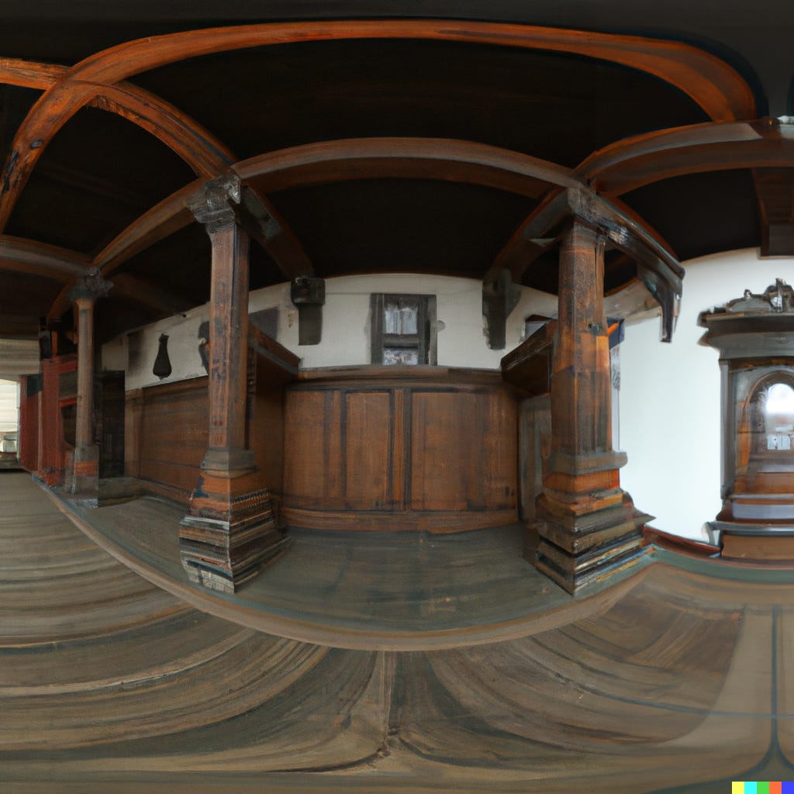
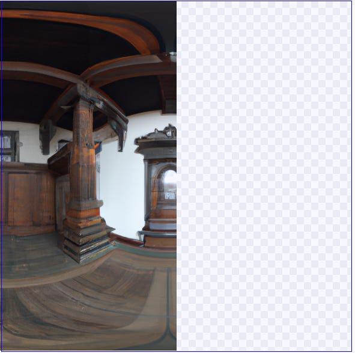
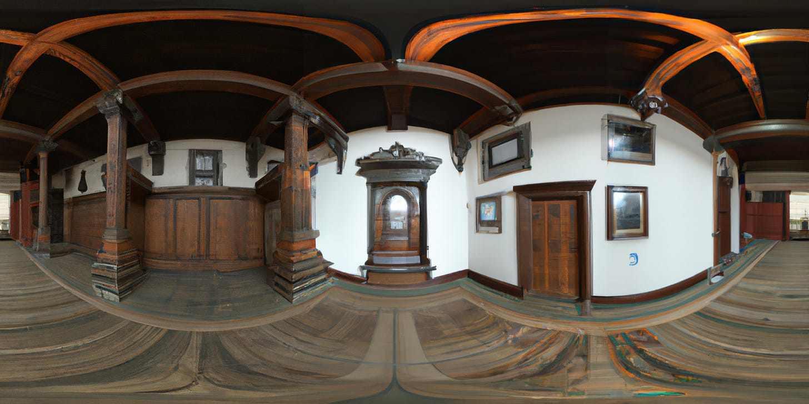
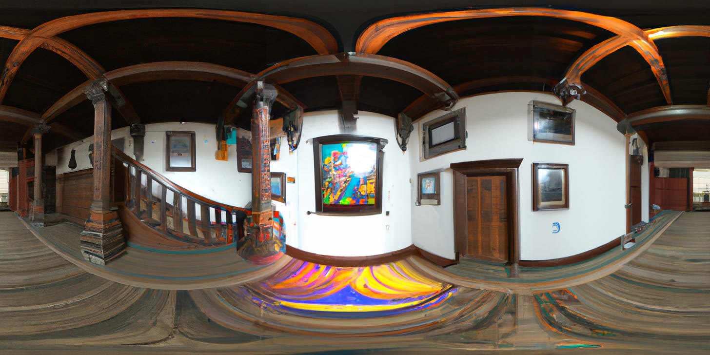
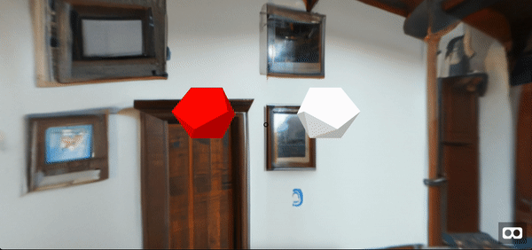

How Generative-AI Will Change the Gaming Industry, A Working Example
Showcase: AIwaska, AI-Native Shooting VR game
In my previous article, I explored the emergence of AI-Native companies and the potential of large generative AI models, such as GPT-3, DALL-E, and Stable Diffusion, to create products and experiences that were previously unimaginable. Today, I want to focus on how these models can revolutionize the gaming industry.
During a 3-day weekend hackathon, my friend Yam and I created "AIwaska," a VR shooting game that allows users to customize the game experience with a single prompt. Our goal was to demonstrate the potential of personalized, immersive entertainment using these AI models.
TLDR; This can change the gaming industry in a few ways:
Providing personalized, custom experiences that can be generated quickly and efficiently from a user prompt.
Reducing the time and resources needed to develop games, enabling faster content creation and lowering the barrier for game developers to produce high-quality games.
Making open-world games truly open-world, offering endless possibilities for exploration and gameplay.
Some Context
The cost and effort involved in creating modern video games cannot be overstated. For example, the highly successful game Grand Theft Auto V cost around $150 million to produce and took over five years to develop, involving a team of 250 employees. Even though it is the extreme, other games are still catching up, like the popular open-world game Skyrim, which cost $100 million to develop. These examples illustrate the significant resources required to create immersive and engaging gaming experiences.
AIwask - "Middle Ages town hall, with a psychedelic teleport door that opens up to the future"
The video shows an example of a VR world created by AIwaska with the user prompt "Middle Ages town hall, with a psychedelic teleport door that opens up to the future."
Building the Game (It is all open-source, link to GitHub at the bottom):
The user gives a prompt of a world he wants to play in (e.g. “Middle Ages town hall, with a teleport..”)
We take the prompt and generate more information about it using GPT-3, like “List objects you’d see in the world “middle ages town hall….”
We take all the information and using DALL-E, we generate the first “frame” - an Equirectangular/Panorama view of the prompt.

Then, using inpainting capability, we iterate the initial image a couple more times to create a full 360 image we can use in a VR.


We then iterate over the entire image in random places and try to place objects and settings we’ve got from step 2 (in this example, “psychedelic” and “teleport”).

Adding the gameplay: Once we have a world and many frames from that world, we need to build the gameplay itself, what the user can do in that VR world. In our case - it was shooting! We used A-Frame, a web framework for building virtual reality experiences, and added the 360-layout we generated in the previous steps.
Then we added the appearing objects in the grid and added the option to “shoot” them.

Lastly, we iterate over the frames we’ve created:
Ka-Bam!
Future/Missing Steps and Final Thoughts:
It's important to note that although the current game may not meet the suggested future, it was only developed in three days to showcase the potential of using Generative-AI in the gaming industry. The game still has many missing parts:
It is not truly AI-oriented, and other than the world’s setting - everything is “fixed”.
It is slow to generate the images.
No Depth
No soundtrack
No "goal” for the game
More ;)
Despite this, all the necessary components for creating such a revolutionary gaming experience already exist, including AI models that generate 3D objects, soundtracks, in-game conversations, plotlines, and tasks. The challenge is to bring them all together in a cohesive manner. However, with the right approach, it is undoubtedly achievable:
To build the future of AIwaska, we will start by creating a core textual engine, which we can call the GPT-3 Plotline. This engine will be built on top of GPT-3 and coordinate all the other models needed for a game. It will be the only part that is guided by user prompts. Then it will generate instructions for the components that should be included in the game, like visual settings, 3D objects, soundtrack, conversations, etc. It will serve as the foundation for the game's construction. (We had already experimented with this approach in AIwaska when we used GPT-3 to suggest additional elements that would fit the user prompt).
Cool projects to keep an eye on in that regard:
Sound:
https://www.riffusion.com/about
https://www.harmonai.org/
3D objects:
https://captures.lumalabs.ai/imagine
Stable Dissufuon DepthMap https://github.com/thygate/stable-diffusion-webui-depthmap-script
Also, it’d probably be better to develop a game like that on top of Stable Diffusion rather than DALL-E, as it has a better community and projects to support future development, you can deploy and scale it yourself, and also, from Stable Diffusion version 2.1 - we should be able to produce 13 FPS (Frames Per Second) which is not too far from actual eyesight and the standards of the gaming industry (30 to 60 fps)!
Lastly, I will note again that this technology has the potential to completely change the gaming industry by offering new and exciting opportunities for both developers and players. While it will still require time, money, and effort to create games, it definitely can reduce it and the enabling experiences that weren’t possible before!
Here, the article ends and shifts from its specific focus to a more broad, philosophical writing.
[Extra] The Far Future and the Importance of Gaming
I want to finish with a thought about the importance of the gaming industry moving forward to a future with AI. The emerging advancement of AI make it hard to argue against its implication on the workforce and the need for human labour. Whether you’re pessimistic or optimistic, think all jobs will be replaced, or that we will find new occupations, you can’t deny that there is a change on the way.
I’m trying to be optimistic, and to explore these possibilities - so I will leave you with a quote from the book “Life 3.0” by Max Tegmark
“[P]erhaps those who obsess about jobs today are being too narrow-minded: we want jobs because they can provide us with income and purpose, but given the opulence of resources produced by machines, it should be possible to find alternative ways to provide both the income and the purpose without jobs.” - Life 3.0, Max Tegmark
Can gaming help? I think so.
Thank you for reading. If you liked my content, don’t hesitate to reach out. I’d love to talk with more people and discuss everything: tech, philosophy, AI, ideas, Lex Fridman, startups, software, science, whatever!
AIwaska Github: https://github.com/adamcohenhillel/aiwaska
Twitter: https://twitter.com/adamcohenhillel
LinkedIn: https://www.linkedin.com/in/adamcohenhillel
Email: adamcohenhillel@gmail.com
Adam.